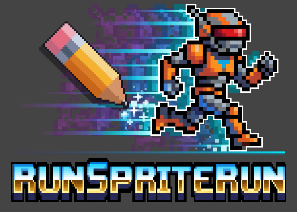

RunSpriteRun turns your pixel art into playable, keyboard-driven animations, kept inside the real colour limits of classic 8-bit and 16-bit systems. Its companion, the Sheet Converter, gets any sprite sheet or GIF ready to import.

Bring in sprites as image files or a sheet, put the frames in order, group them into animations, and run them with the keyboard to see how a character will move.
Download the Windows installerTurn 3rd party sprite sheets or single animated Gifs / WebPs (from retro games and modern creations) into RunSpriteRun files. Ready to import and edit.
Download the Windows installer